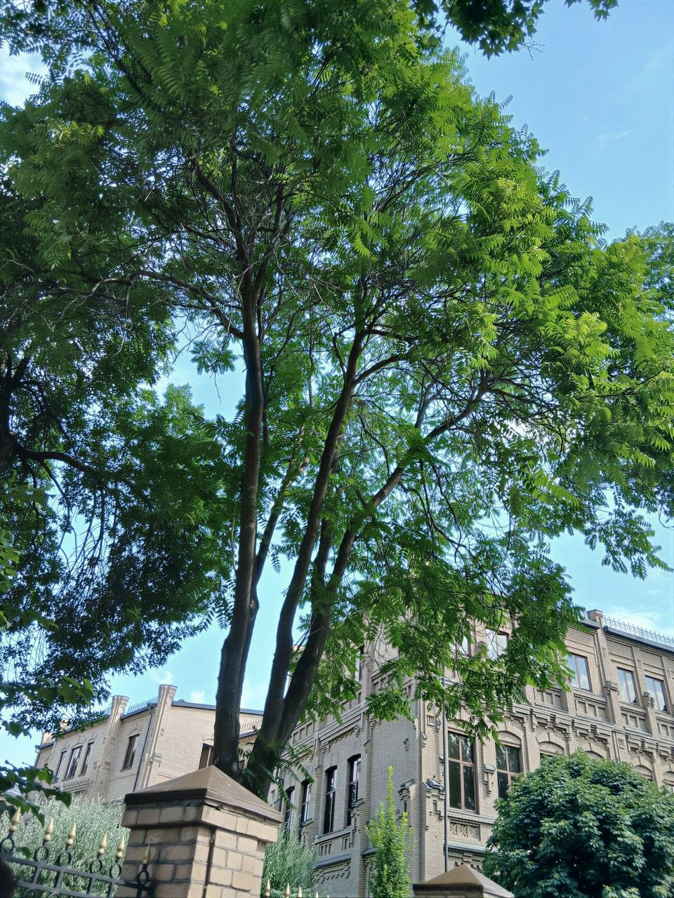

Journal
Notes, observations, photographs, and things I'm thinking about.
Featured
A Walk Through Samarkand
Samarkand, Uzbekistan · July 18–20, 2026
An afternoon of walking, observing, and noticing familiar places from a slightly different perspective.
Read entry →Recent
08 AUG 2026
02 AUG 2026
27 JUL 2026
19 JUL 2026
A Walk Through Samarkand
On Not Knowing What Comes Next
What I'm Reading
Building My First Website
Photographs
Tashkent
Samarkand

Westminster